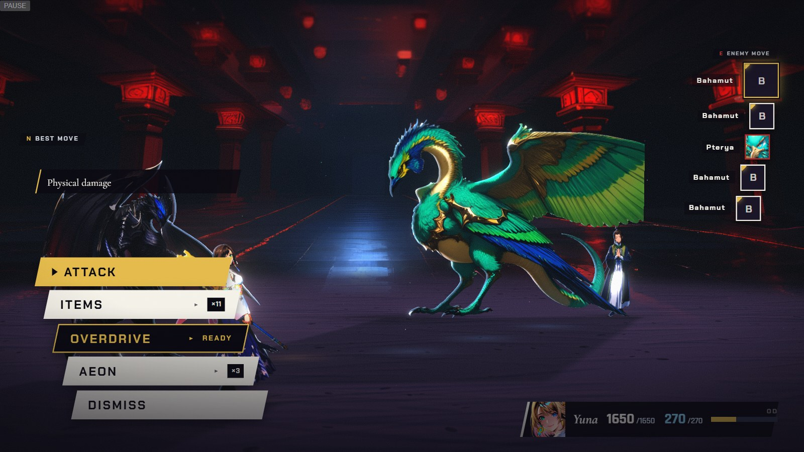

II
Pterya
C
Marks in the world — Link 2 begins: Isaaru calls Pterya
Real engine frame + real HUD (Chapter X battle, Yuna-only line-up, candidate art served in) · overlays are the mockup · aeon numbers are Chapter X’s shipped values
CONCEPT